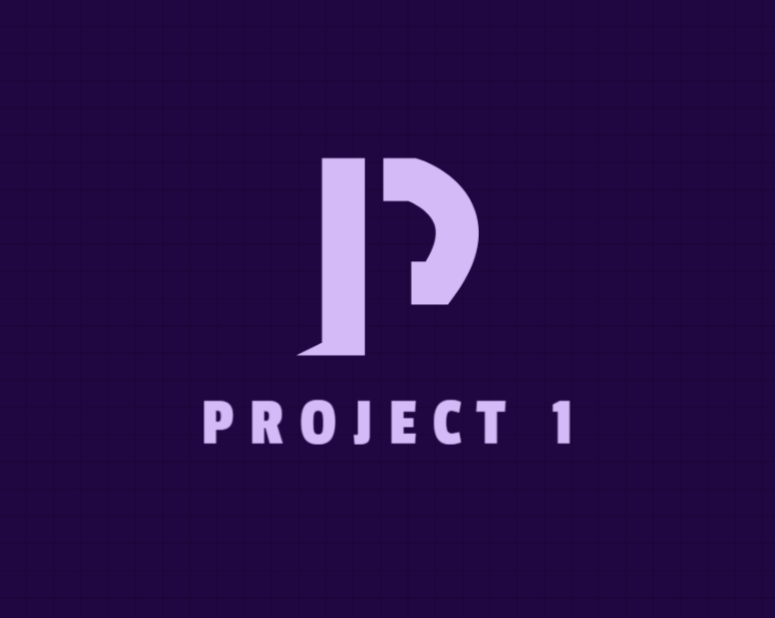

Experiências Profissionais:
Projetos

The Conundrum
The Conundrum é um projeto em que eu desenvolvi como Projeto Final no curso integrado de telecomunicações onde eu tinha que fazer um jogo co-op em dupla para a resolução de puzzles. O jogo conta com VoIP, 2 Finais e Easter Eggs. Feito em JS utilizando o framework Phaser3.
(Projeto produzido para a feira-de-jogos IFSC-SJ)

Project 1
Project 1 é um projeto em desenvenvolvimento sobre um jogo RNG, jogo totalmente multiplayer hospedado no roblox, consiste em um jogo em que você tem que ter a sorte de conseguir artefatos raros. feito em Lua, utilizando a interface gráfica do Roblox Studio. (Atualmente em hiato)
(Projeto feito em cooperação com alguns amigos)